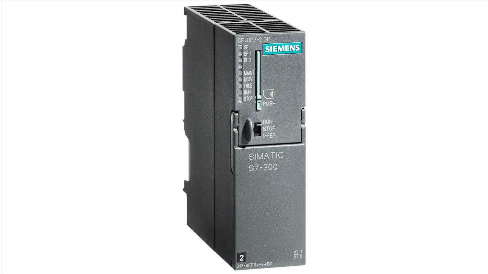

Projetos Realizados
- Gestão e Supervisão de CO2
Entreprise:Companhia castel de bebidas de Luanda(CCBL)
Contexte du projet:
Le système développé est composé de plusieurs parties essentielles, à savoir :
- La conception du système : incluant l’architecture de communication entre
l’automate, les débitmètres et l’interface HMI .
- L’acquisition des données : à partir de capteurs de débit connectés à un
automate Siemens S7-315 .
- La visualisation et la gestion des données : à travers d’un
panneau opérateur (IPC677D) avec des écrans dynamiques pour le suivi en temps réel, la
configuration des paramètres et l’analyse des consommations .
- L’extraction des données : via un bouton intégré à l’IHM permettant
d’exporter les mesures dans un fichier Excel pour archivage et exploitation.
Composants principaux du projet
- FLOWMETER OPTISWIRL 4200 C – KROHNE et Proline Promass :
- Automate Siemens S7-300:

- IPC system :
Logiciels Utilisés dans le projet:
- TIA Portal V18:
- WinCC Runtime advanced:
- Excel
- Eplan Electric
Principe de Fontionnement du projet
- Les capteurs mesurent en continu le débit instantané et le volume totalisé de CO2.
- Ces valeurs sont lues par l’automate S7-300 via les entrées analogiques (4–20
mA).
- L’automate traite les données, les convertit si nécessaire, puis les envoie à
l’IHM.
- L’IHM affiche ces valeurs sur des écrans conçus sous WinCC. Les opérateurs
peuvent y :
- consulter les données en direct,
- visualiser les historiques sous forme de courbes (Trend View)
- filtrer par plage horaire (1h, 1 jour, 1 semaine, etc.)
- déclencher des exports vers Excel.
- Les données archivées peuvent être récupérées automatiquement dans Excel
- Controle de temperatura na sala de Levedura na ECN
2.jpg)